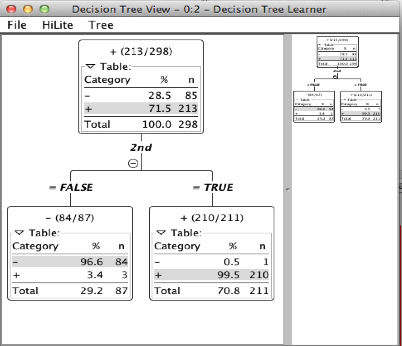

Given a dataset, determine why or why not a user is a 'winner' or a 'loser'.
It was a Thursday night. Lightning flashed in the distance as one man struggled against the might of his data mining assignment. The clock struck twelve and the data revealed no more. Beer had come and gone and yet no flash of inspiration had struck the intrepid student.
I even considered taking a leaf out of Natural Language Processing’s book and generating ngrams of each name. A unigram may have actually worked, in hindsight. After thinking about it for some time, I decided to play with the position of vowels in the data when I noticed that there was a rather large occurrence of vowels in the second character of the winners. Using an irb session, I generated the true/false associated with each datapoint. It would no longer read in Weka, so I switched to Knime and generated a decision tree as shown below.

I, am a winner. I have conquered this data set, and I have a vowel for a second character.